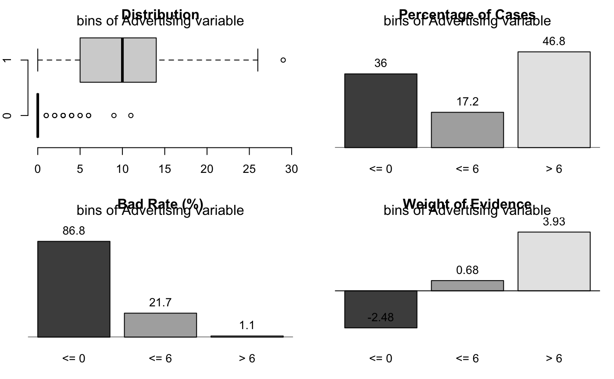

The binning_by() finding intervals for numerical variable using optical binning. Optimal binning categorizes a numeric characteristic into bins for ulterior usage in scoring modeling.
binning_by(df, y, x, p = 0.05, ordered = TRUE, labels = NULL)
| df | a data frame. |
|---|---|
| y | character. name of binary response variable(0, 1). The variable must contain only the integers 0 and 1 as element. However, in the case of factor having two levels, it is performed while type conversion is performed in the calculation process. It does not support that the variable name is "default" and that the dot is included in the variable name. |
| x | character. name of continuous characteristic variable. At least 5 different values. Inf is not allowed. It does not support that the variable name that the dot is included in the variable name. |
| p | numeric. percentage of records per bin. Default 5% (0.05). This parameter only accepts values greater that 0.00 (0%) and lower than 0.50 (50%). |
| ordered | logical. whether to build an ordered factor or not. |
| labels | character. the label names to use for each of the bins. |
an object of "optimal_bins" class. Attributes of "optimal_bins" class is as follows.
class : "optimal_bins".
type : binning type, "optimal".
breaks : numeric. the number of intervals into which x is to be cut.
levels : character. levels of binned value.
raw : numeric. raw data, x argument value.
ivtable : data.frame. information value table
iv : numeric. information value
target : integer. binary response variable
This function is useful when used with the mutate/transmute function of the dplyr package. And this function is implemented using smbinning() function of smbinning package.
Attributes of the "optimal_bins" class that is as follows.
class : "optimal_bins".
levels : character. factor or ordered factor levels
type : character. binning method
breaks : numeric. breaks for binning
raw : numeric. before the binned the raw data
ivtable : data.frame. information value table
iv : numeric. information value
target : integer. binary response variable
See vignette("transformation") for an introduction to these concepts.
binning, smbinning.
# Generate data for the example carseats <- ISLR::Carseats carseats[sample(seq(NROW(carseats)), 20), "Income"] <- NA carseats[sample(seq(NROW(carseats)), 5), "Urban"] <- NA # optimal binning bin <- binning_by(carseats, "US", "Advertising")#> Warning: The factor y has been changed to a numeric vector consisting of 0 and 1.bin#> binned type: optimal #> number of bins: 3 #> x #> [-1,0] (0,6] (6,29] #> 144 69 187#> levels freq rate #> 1 [-1,0] 144 0.3600 #> 2 (0,6] 69 0.1725 #> 3 (6,29] 187 0.4675